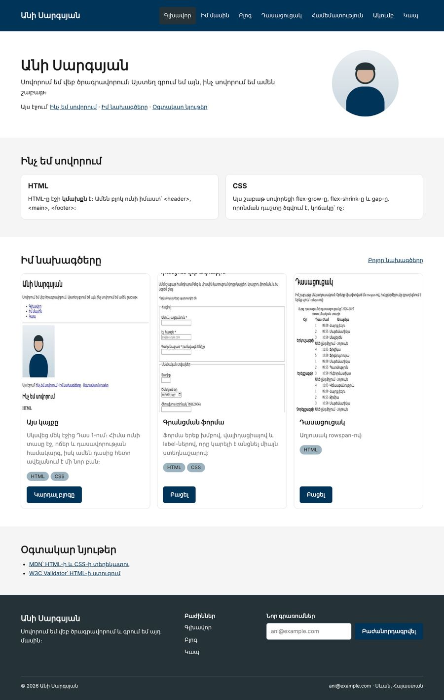
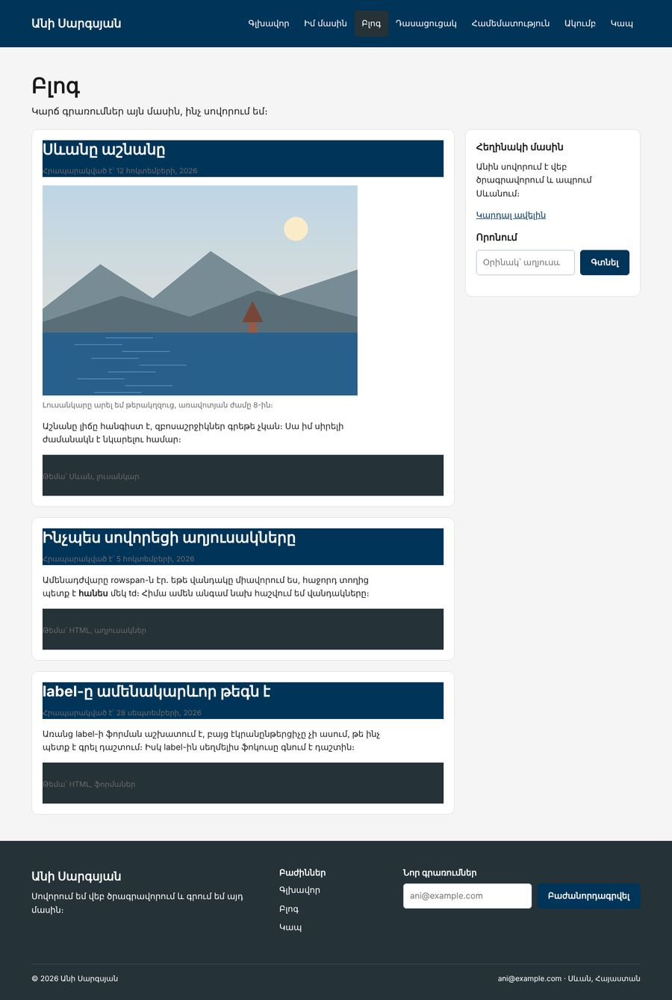

Տնային աշխատանք · HTML Դաս 12 · մինի-նախագիծ
Գործնականում ես կիրառում flex-grow-ը, flex-shrink-ը, gap-ը և flex-wrap-ը․ բաժանորդագրման ֆորմա footer-ում և որոնում բլոգում։
Օգտագործիր միայն Դաս 01–12-ը։ Media query-ներ դեռ չենք օգտագործում (Դաս 14), իսկ դիզայնի տոկենները (--wall, --gap) Դաս 13-ում են։
Footer-ը ստանում է բաժանորդագրման ֆորմա, իսկ բլոգը՝ որոնման դաշտ։ Երկու դեպքում էլ դաշտը ձգվում է, իսկ կոճակը երբեք չի սեղմվում։ Սյուներով տողերը փաթաթվում են նեղ էկրանին։


Սկսիր Դաս 11-ի քո կայքից։ Եթե այն չունես, վերցրու Դաս 11-ի օրինակը։
global.css-ում՝ .flex-wrap { flex-wrap: wrap; }։ main.css-ում՝ .gap-* և .mb-* դասերը (բաժին 5)։
<form class="inline-form flex gap-10" action="index.html" method="get">
<label for="mail" class="visually-hidden">Էլ. հասցե</label>
<input type="email" id="mail" name="mail" placeholder="ani@example.com" required>
<button type="submit" class="btn">Բաժանորդագրվել</button>
</form>.inline-form input {
flex-grow: 1; /* ձգվում է ազատ տեղի վրա */
min-width: 0; /* թույլ է տալիս սեղմվել իր բովանդակությունից փոքր */
}
.inline-form .btn {
flex-shrink: 0; /* կոճակը չի սեղմվում */
}Ջնջիր flex-shrink: 0-ն և նեղացրու պատուհանը․ կոճակի տեքստը կսկսի կոտրվել երկու տողի։ Ջնջիր min-width: 0-ն․ երկար placeholder-ով դաշտը դուրս կգա սյունից։
Երեք սյուն՝ 40/20/40, ներքևի տողը՝ flex justify-between align-center flex-wrap gap-10, իսկ բաժանարար գիծը՝ .footer__bottom-ի border-top-ով։
Նույն .inline-form կոմպոնենտը, ուրիշ տեղում։ Նոր CSS պետք չէ․ եթե պետք եղավ, ուրեմն կոմպոնենտը կախված է իր տեղից։
Բոլոր այն .row-երին, որոնցում մեկից ավելի սյուն կա, ավելացրու flex-wrap։ Մենյուի ul-ին՝ նույնպես։ Նեղացրու պատուհանը և նկարագրիր, թե ինչ է կատարվում։ Լիարժեք ադապտիվությունը Դաս 14-ում է․ այսօր միայն համոզվում ենք, որ ոչինչ դուրս չի գալիս։
Մեր սյուներն ունեն .w-* տոկոսներով և padding՝ բացակի համար։ Եթե .row-ին տաս gap, 33% + 33% + 33% + 2 × gap > 100%, և վերջին սյունը կանցնի նոր տող։ Ուստի սյուների համար gap չենք օգտագործում, իսկ ներսի flex բլոկների համար՝ այո։
.inline-form կոմպոնենտ՝ երկու տեղումflex-wrap| Սխալ | Ինչպես ուղղել |
|---|---|
| Դաշտը դուրս է գալիս սյունից | Բացակայում է min-width: 0 |
| Կոճակի տեքստը կոտրվում է | Բացակայում է flex-shrink: 0 |
| Վերջին սյունը միշտ նոր տողում է | .row-ին տրված է gap, և տոկոսների գումարը 100%-ից անցավ |
Սրանք Դաս 12-ի տնային աշխատանքի կետերն են։ «մինի-նախագծում» նշվածները արդեն կատարել ես վերևի քայլերում, մնացածը կատարիր առանձին ֆայլերում կամ նույն թղթապանակում։
flex-grow-ի ազդեցությունը՝ երեք բլոկ, grow-ը միայն մեկին։flex-grow: 1-ը և flex: 1-ը՝ շատ տարբեր երկարության տեքստերով։ Բացատրիր տարբերությունը։flex-grow և flex-shrink: 0-ով։ մինի-նախագծումflex-shrink: 0-ի կարևորությունը լոգոյի օրինակով՝ առաջ և հետո։ մինի-նախագծումgap-ի և տոկոսային լայնությունների կոնֆլիկտը։ Ապա լուծիր՝ flex: 1-ի անցնելով։flex: 1 1 250px-ով, 6 տարրով։ Ստուգիր տարբեր լայնություններով։flex-wrap: wrap Դաս 10-ի «Մեր թիմը» բաժնին։ Նեղացրու պատուհանը և նկարագրիր վարքագիծը։ մինի-նախագծումorder-ի հասանելիության խնդիրը․ երեք հղում, order-ով փոխված հերթականությամբ։ Անցիր Tab-ով և նկարագրիր, ինչ ես տեսնում։Երբ բաժին 03-ի բոլոր կետերը նշված են, բացիր օրինակը և քո էջը կողք կողքի։ Բացիր երկուսի կոդն էլ խմբագրիչում։ Գտիր մեկ բան, որ դու արել ես այլ կերպ, և մտածիր՝ որն է ավելի հասկանալի և ինչու։ Քո լուծումը կարող է տարբերվել և լինել ճիշտ։